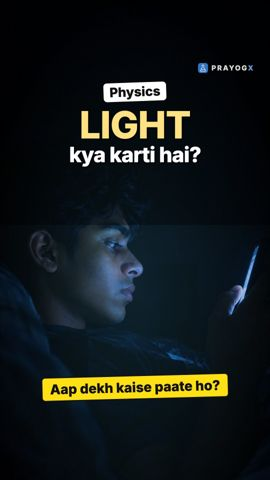
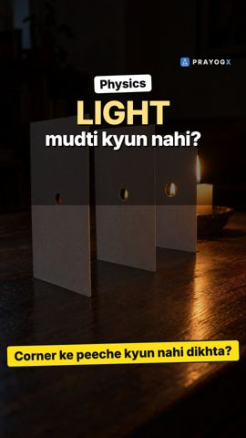

Chapter 9 · Physics
Image Formed by a Plane Mirror
Video not playing? Watch on Instagram · YouTube
Stand 2 m from a mirror and your image is 4 m from you. Why a plane mirror's image is virtual, erect, the same size, as far behind as you are in front, and laterally inverted.
Download the short notesPDF, 190 KB · solved examples, practice set and answer key Download the workbook
PDF, 176 KB · fill in the blanks, true/false, assertion-reason, MCQ, numericals, short answer, match the columns; detailed solutions at the end That's all the videos in this chapter so far Back to Light – Reflection and Refraction
Key points
- Rays from an object reflect off the mirror; traced back, they appear to come from one point behind the mirror: the image.
- The image is as far behind the mirror as the object is in front (2 m in front → 4 m from you).
- It is virtual (cannot be caught on a screen) and erect, and the same size as the object.
- It is laterally inverted: your right hand appears as the image's left (hence the mirror-written AMBULANCE).
Properties of the image
| Property | Plane mirror |
|---|---|
| Nature | Virtual (cannot be obtained on a screen) |
| Orientation | Erect |
| Size | Same as the object (magnification = 1) |
| Position | As far behind the mirror as the object is in front |
| Left-right | Laterally inverted |
How the image forms
- Two rays leave the top of the object and strike the mirror.
- Each reflects with angle of reflection = angle of incidence.
- The reflected rays diverge; the eye traces them straight back.
- The dashed extensions meet behind the mirror: the virtual image.
Worked example
Object 2 m in front → image 2 m behind → you to image = 2 + 2 = 4 m
If you walk 1 m towards the mirror, the image also moves 1 m towards it, so the distance between you and your image falls by 2 m.
Try it yourself
Goal: Move the object and the eye, and find out what sets where the image is and whether you can see it.
- Drag the object (or use the slider) and compare its distance from the mirror with the image's.
- Press Walk 1 m closer and see how much the gap to your image changes.
- Drag the eye: do the rays change? Does the image move?
- Move the eye far to one side until no ray reaches it.
- Type a word and see what the mirror does to it.
Quick quiz
3 questions. Choose an answer for each, then submit to see your score and the explanations.
More from Light – Reflection and Refraction
 Laws of ReflectionTo hit a hidden target with a laser and a mirror you need 2 rules: i = r (both measured from the normal) and all three rays in one plane.Physics · simulation
Laws of ReflectionTo hit a hidden target with a laser and a mirror you need 2 rules: i = r (both measured from the normal) and all three rays in one plane.Physics · simulation Reflection of LightThe Moon makes no light, yet it shines at night: sunlight bounces off it to our eyes. That bouncing back is reflection.Physics
Reflection of LightThe Moon makes no light, yet it shines at night: sunlight bounces off it to our eyes. That bouncing back is reflection.Physics Regular vs Diffused ReflectionA mirror and a white wall both reflect light; only the mirror shows your face. Smooth surfaces keep rays parallel; rough ones scatter them.Physics · simulation
Regular vs Diffused ReflectionA mirror and a white wall both reflect light; only the mirror shows your face. Smooth surfaces keep rays parallel; rough ones scatter them.Physics · simulation
Light: Chapter IntroductionWe see things because light bounces off them into our eyes. At a surface light has 2 options: bounce back (reflection) or go in and bend (refraction).Physics
Light Travels in Straight LinesYou can hear a friend round a corner but not see them: sound bends, light travels in straight lines. We draw its path as a ray.Physics